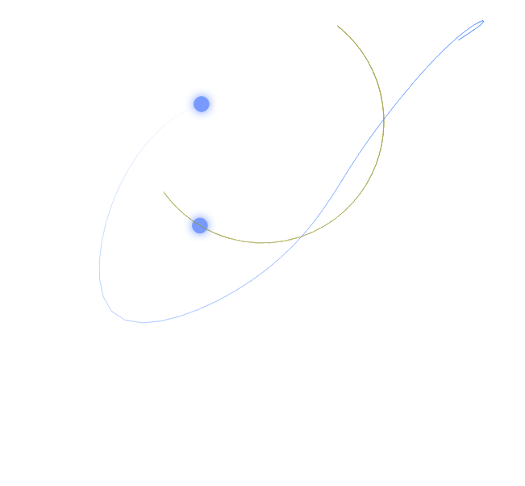

Wahadło podwójne, czyli jak przewidzieć ruch układu chaotycznego?
Podwójne wahadło to fascynujący przykład układu chaotycznego. Interaktywna animacja w JavaScript pozwala eksplorować jego dynamikę, manipulując parametrami fizycznymi oraz warunkami początkowymi.
Zobacz >>